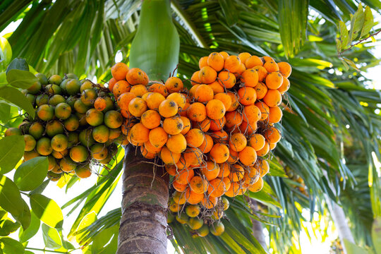
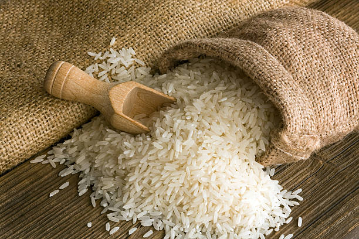
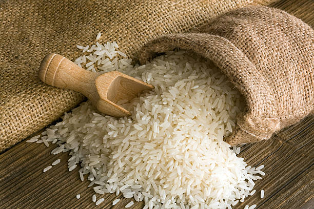

Land Preparation:
Choose a suitable field with well-drained soil. Rice requires a lot of water, so the field should be
able to
retain water without becoming waterlogged.
Plow the field to break up the soil and create a fine seedbed.
Level the field to ensure uniform water distribution during cultivation.
Seedbed Preparation:
Prepare a seedbed either on the same field or a separate location. This is where the rice seeds will be
sown and
germinated before transplanting.
Sow the rice seeds in rows, ensuring proper spacing.
Seed Germination:
Keep the seedbed adequately watered to facilitate germination.
Monitor the seedlings for pests and diseases, and take appropriate measures if necessary.
Nursery Maintenance:
Once the rice seedlings have reached a suitable height (usually a few inches), they are ready for
transplanting.
Maintain the nursery by providing sufficient water and protecting the seedlings from pests.
Transplanting:
Transplant the seedlings from the nursery to the main field. This is typically done when the seedlings
have 3-4
leaves.
Ensure proper spacing between the transplanted seedlings to allow for healthy growth.
Water Management:
Rice requires a lot of water for optimal growth. Maintain a consistent water level in the field,
especially
during the growing season.
In some cases, farmers use traditional flood irrigation methods, while others may use more modern techniques
such as drip or sprinkler irrigation.
Fertilization:
Apply fertilizers based on soil testing and the specific nutrient requirements of rice. Common
fertilizers
include nitrogen, phosphorus, and potassium.
Harvesting:
Harvesting is typically done when the rice grains have matured and turned golden brown.
Use sickles or combine harvesters for large-scale operations.
Drying and Threshing:
Dry the harvested rice in the sun or using mechanical dryers.
Once dried, thresh the rice to separate the grains from the straw.
Milling and Storage:
Mill the rice to remove the outer husk, bran, and germ.
Store the processed rice in a cool, dry place.
हिंदी
നിലമൊരുക്കൽ:
നല്ല നീർവാർച്ചയുള്ള മണ്ണുള്ള അനുയോജ്യമായ വയൽ തിരഞ്ഞെടുക്കുക. നെല്ലിന് ധാരാളം വെള്ളം ആവശ്യമാണ്, അതിനാൽ പാടത്ത് വെള്ളം കെട്ടിനിൽക്കാതെ വെള്ളം നിലനിർത്താൻ കഴിയണം. നിലം ഉഴുതുമറിച്ച് മണ്ണ് പിളർന്ന് നല്ല വിത്ത് തടം ഉണ്ടാക്കുക. കൃഷി സമയത്ത് ഏകീകൃത ജലവിതരണം ഉറപ്പാക്കാൻ പാടം നിരപ്പാക്കുക.
വിത്ത് തടം തയ്യാറാക്കൽ:
ഒരേ വയലിലോ പ്രത്യേക സ്ഥലത്തോ ഒരു വിത്ത് തടം തയ്യാറാക്കുക. ഇവിടെയാണ് പറിച്ചുനടുന്നതിന് മുമ്പ് നെൽവിത്ത് പാകുന്നതും മുളപ്പിച്ചതും. കൃത്യമായ അകലം ഉറപ്പാക്കി നെൽവിത്ത് വരിവരിയായി വിതയ്ക്കുക.
വിത്ത് മുളയ്ക്കൽ:
മുളയ്ക്കുന്നതിന് ആവശ്യമായ വെള്ളം നനയ്ക്കുക. കീടങ്ങൾക്കും രോഗങ്ങൾക്കും തൈകൾ നിരീക്ഷിക്കുക, ആവശ്യമെങ്കിൽ ഉചിതമായ നടപടികൾ കൈക്കൊള്ളുക.
നഴ്സറി പരിപാലനം:
നെൽ തൈകൾ അനുയോജ്യമായ ഉയരത്തിൽ (സാധാരണയായി ഏതാനും ഇഞ്ച്) എത്തിക്കഴിഞ്ഞാൽ, അവ പറിച്ചുനടാൻ തയ്യാറാണ്. ആവശ്യത്തിന് വെള്ളം നൽകിയും തൈകളെ കീടങ്ങളിൽ നിന്ന് സംരക്ഷിച്ചും നഴ്സറി പരിപാലിക്കുക.
പറിച്ചുനടൽ:
നഴ്സറിയിൽ നിന്ന് പ്രധാന വയലിലേക്ക് തൈകൾ പറിച്ചുനടുക. തൈകൾക്ക് 3-4 ഇലകൾ ഉള്ളപ്പോഴാണ് ഇത് സാധാരണയായി ചെയ്യുന്നത്. പറിച്ചുനട്ട തൈകൾക്കിടയിൽ ശരിയായ അകലം ഉറപ്പാക്കി ആരോഗ്യകരമായ വളർച്ച ഉറപ്പാക്കുക.
ജല പരിപാലനം:
നെല്ലിന് ഒപ്റ്റിമൽ വളർച്ചയ്ക്ക് ധാരാളം വെള്ളം ആവശ്യമാണ്. വയലിൽ, പ്രത്യേകിച്ച് വളരുന്ന സീസണിൽ സ്ഥിരമായ ജലനിരപ്പ് നിലനിർത്തുക. ചില സന്ദർഭങ്ങളിൽ, കർഷകർ പരമ്പരാഗത വെള്ളപ്പൊക്ക ജലസേചന രീതികൾ ഉപയോഗിക്കുന്നു, മറ്റുള്ളവർ ഡ്രിപ്പ് അല്ലെങ്കിൽ സ്പ്രിംഗ്ളർ ജലസേചനം പോലുള്ള കൂടുതൽ ആധുനിക സാങ്കേതിക വിദ്യകൾ ഉപയോഗിക്കുന്നു.
വളപ്രയോഗം:
മണ്ണ് പരിശോധനയും അരിയുടെ പ്രത്യേക പോഷക ആവശ്യകതകളും അടിസ്ഥാനമാക്കി വളങ്ങൾ പ്രയോഗിക്കുക. സാധാരണ വളങ്ങളിൽ നൈട്രജൻ, ഫോസ്ഫറസ്, പൊട്ടാസ്യം എന്നിവ ഉൾപ്പെടുന്നു.
വിളവെടുപ്പ്:
നെൽക്കതിരുകൾ പാകമാകുകയും സ്വർണ്ണ തവിട്ട് നിറമാകുകയും ചെയ്യുമ്പോൾ വിളവെടുപ്പ് നടത്താറുണ്ട്. വലിയ തോതിലുള്ള പ്രവർത്തനങ്ങൾക്ക് അരിവാൾ ഉപയോഗിക്കുക അല്ലെങ്കിൽ കൊയ്ത്തു യന്ത്രങ്ങൾ സംയോജിപ്പിക്കുക.
ഉണക്കലും മെതിക്കലും:
വിളവെടുത്ത നെല്ല് വെയിലത്തോ മെക്കാനിക്കൽ ഡ്രയർ ഉപയോഗിച്ചോ ഉണക്കുക. ഉണങ്ങിയ ശേഷം, വൈക്കോലിൽ നിന്ന് ധാന്യങ്ങൾ വേർതിരിക്കുന്നതിന് അരി മെതിക്കുക.
മില്ലിംഗും സംഭരണവും:
പുറംതൊലി, തവിട്, അണുക്കൾ എന്നിവ നീക്കം ചെയ്യാൻ അരി അരക്കുക. സംസ്കരിച്ച അരി തണുത്തതും ഉണങ്ങിയതുമായ സ്ഥലത്ത് സൂക്ഷിക്കുക.
सुनना
2. CASHEW / 2. काजू
ENGLISH
Selection of Suitable Land:
Choose well-drained soil with good fertility for cashew cultivation. Sandy-loam soils are generally
preferred.
Ensure proper sunlight exposure, as cashew trees thrive in sunny conditions.
Site Preparation:
Clear the land of any debris or unwanted vegetation.
Plow and harrow the soil to prepare a suitable seedbed for planting.
Propagation:
Cashew is usually propagated through seeds or grafting.
If seeds are used, they are planted directly in the field or in nurseries. Grafted plants can also be planted.
Planting:
Cashew plants are usually spaced at a distance of about 7 to 10 meters apart, depending on the variety
and local conditions.
Plant the seedlings or grafted plants at the beginning of the rainy season to facilitate establishment.
Watering:
Provide adequate water to young cashew plants, especially during the dry season. Once established,
cashew trees are relatively drought-tolerant.
Weed Control:
Control weeds around the base of the cashew trees to reduce competition for nutrients and water.
Mulching can be used to suppress weeds and retain soil moisture.
Fertilization:
Apply fertilizers based on soil testing and the nutritional needs of cashew trees.
Commonly used fertilizers include organic manure, nitrogen, phosphorus, and potassium.
Pruning:
Prune the cashew trees to shape them and encourage a balanced canopy.
Remove dead or diseased branches regularly.
Pest and Disease Management:
Monitor for pests such as stem borers and aphids, as well as diseases like powdery mildew.
Use appropriate pesticides or other control measures as needed.
Harvesting:
Cashew trees start bearing fruit in 3-5 years. Harvesting is typically done once a year.
Harvest the cashew nuts when they are fully mature, usually identified by the nut's color changing from green to
brown.
The cashew apples are also harvested and can be used for making beverages or processed into cashew apple
products.
हिंदी
അനുയോജ്യമായ ഭൂമി തിരഞ്ഞെടുക്കൽ:
കശുമാവ് കൃഷിക്ക് നല്ല ഫലഭൂയിഷ്ഠതയുള്ള നല്ല നീർവാർച്ചയുള്ള മണ്ണ് തിരഞ്ഞെടുക്കുക. മണൽ കലർന്ന പശിമരാശി മണ്ണാണ് പൊതുവെ അഭികാമ്യം. കശുവണ്ടി മരങ്ങൾ സണ്ണി സാഹചര്യങ്ങളിൽ തഴച്ചുവളരുന്നതിനാൽ ശരിയായ സൂര്യപ്രകാശം ഉറപ്പാക്കുക.
സൈറ്റ് തയ്യാറാക്കൽ:
ഏതെങ്കിലും അവശിഷ്ടങ്ങൾ അല്ലെങ്കിൽ അനാവശ്യ സസ്യജാലങ്ങളിൽ നിന്ന് ഭൂമി വൃത്തിയാക്കുക. നടുന്നതിന് അനുയോജ്യമായ വിത്ത് തടം തയ്യാറാക്കുന്നതിനായി മണ്ണ് ഉഴുതുമറിക്കുക.
പ്രജനനം:
കശുവണ്ടി സാധാരണയായി വിത്ത് അല്ലെങ്കിൽ ഒട്ടിക്കൽ വഴിയാണ് പ്രചരിപ്പിക്കുന്നത്. വിത്തുകളാണ് ഉപയോഗിക്കുന്നതെങ്കിൽ, അവ നേരിട്ട് വയലിലോ നഴ്സറികളിലോ നടാം. ഗ്രാഫ്റ്റ് ചെയ്ത ചെടികളും നടാം.
നടീൽ:
കശുമാവ് ചെടികൾ സാധാരണയായി 7 മുതൽ 10 മീറ്റർ വരെ അകലത്തിലാണ്, വൈവിധ്യവും പ്രാദേശിക സാഹചര്യങ്ങളും അനുസരിച്ച്. സ്ഥാപനം സുഗമമാക്കുന്നതിന് തൈകളോ ഒട്ടിച്ച ചെടികളോ മഴക്കാലത്തിൻ്റെ തുടക്കത്തിൽ നടുക.
നനവ്:
ഇളം കശുമാവിന്, പ്രത്യേകിച്ച് വരണ്ട സീസണിൽ ആവശ്യത്തിന് വെള്ളം നൽകുക. ഒരിക്കൽ സ്ഥാപിതമായ കശുമാവ് താരതമ്യേന വരൾച്ചയെ പ്രതിരോധിക്കും.
കളനിയന്ത്രണം:
പോഷകങ്ങൾക്കും ജലത്തിനും വേണ്ടിയുള്ള മത്സരം കുറയ്ക്കുന്നതിന് കശുമാവിൻ്റെ ചുവട്ടിലെ കളകളെ നിയന്ത്രിക്കുക. കളകളെ അടിച്ചമർത്താനും മണ്ണിലെ ഈർപ്പം നിലനിർത്താനും പുതയിടൽ ഉപയോഗിക്കാം.
വളപ്രയോഗം:
മണ്ണ് പരിശോധനയും കശുമാവിൻ്റെ പോഷക ആവശ്യങ്ങളും അടിസ്ഥാനമാക്കി വളങ്ങൾ പ്രയോഗിക്കുക. സാധാരണയായി ഉപയോഗിക്കുന്ന രാസവളങ്ങളിൽ ജൈവവളം, നൈട്രജൻ, ഫോസ്ഫറസ്, പൊട്ടാസ്യം എന്നിവ ഉൾപ്പെടുന്നു.
അരിവാൾ:
കശുമാവ് മരങ്ങൾ വെട്ടിമാറ്റുക, അവയെ രൂപപ്പെടുത്തുകയും സമതുലിതമായ മേലാപ്പ് പ്രോത്സാഹിപ്പിക്കുകയും ചെയ്യുക. ചത്തതോ രോഗമുള്ളതോ ആയ ശാഖകൾ പതിവായി നീക്കം ചെയ്യുക.
കീടങ്ങളും രോഗനിയന്ത്രണവും:
തണ്ടുതുരപ്പൻ, മുഞ്ഞ തുടങ്ങിയ കീടങ്ങളും പൂപ്പൽ പോലുള്ള രോഗങ്ങളും നിരീക്ഷിക്കുക. ആവശ്യമായ കീടനാശിനികളോ മറ്റ് നിയന്ത്രണ മാർഗങ്ങളോ ഉപയോഗിക്കുക.
വിളവെടുപ്പ്:
കശുമാവ് 3-5 വർഷത്തിനുള്ളിൽ ഫലം കായ്ക്കാൻ തുടങ്ങും. സാധാരണയായി വർഷത്തിലൊരിക്കൽ വിളവെടുപ്പ് നടത്താറുണ്ട്. കശുവണ്ടി പരിപ്പ് പൂർണ്ണമായും പാകമാകുമ്പോൾ വിളവെടുക്കുക, സാധാരണയായി പരിപ്പിൻ്റെ നിറം പച്ചയിൽ നിന്ന് തവിട്ടുനിറത്തിലേക്ക് മാറുന്നു. കശുവണ്ടി ആപ്പിളും വിളവെടുക്കുന്നു, പാനീയങ്ങൾ നിർമ്മിക്കുന്നതിനോ അല്ലെങ്കിൽ കശുവണ്ടി ആപ്പിൾ ഉൽപ്പന്നങ്ങളാക്കി മാറ്റുന്നതിനോ ഉപയോഗിക്കാം.
सुनना
3. COCONUT / 3. नारियल
ENGLISH
Land Preparation:
Choose well-drained soil with good water retention.
Clear the land of weeds and debris.
Dig pits for planting coconut saplings, spaced according to the variety and local conditions.
Variety Selection:
Choose a coconut variety suitable for the local climate and soil conditions.
Dwarf varieties are often preferred for ease of harvesting.
Planting:
Plant healthy and disease-free coconut saplings in the prepared pits.
Ensure that the soil around the sapling is firmly packed to provide stability.
Planting is usually done at the beginning of the monsoon season.
Watering:
Provide regular and consistent watering, especially during the initial establishment period.
Once established, coconut trees are generally drought-tolerant.
Fertilization:
Apply organic manure and balanced fertilizers according to the age of the coconut tree.
Commonly used fertilizers include those containing nitrogen, phosphorus, and potassium.
Weed Control:
Control weeds around the base of the coconut trees to reduce competition for nutrients.
Mulching can be used to suppress weeds and conserve soil moisture.
Pruning:
Prune dead or diseased fronds regularly to maintain a healthy canopy.
Remove any inflorescences or fruits that may be damaged or diseased.
Pest and Disease Management:
Monitor for pests such as coconut mites and rhinoceros beetles.
Control measures may include the use of pesticides and biological control methods.
Common diseases include bud rot and lethal yellowing, and preventive measures should be taken.
Harvesting:
Coconut trees typically start bearing fruit in 5-7 years.
Harvest coconuts when they are fully mature. This is indicated by changes in color and sound when tapping the
nut.
Processing:
Husk removal: Remove the outer husk of the coconut to expose the shell.
Dehusking: Remove the hard shell to reveal the coconut kernel.
Deshelling: Extract the edible coconut meat from the kernel.
Storage:
Store coconuts in a cool, dry place.
Coconut products like copra (dried coconut kernel) can be stored for a longer duration.
हिंदी
നിലമൊരുക്കൽ:
നല്ല നീർവാർച്ചയുള്ള, നല്ല വെള്ളം നിലനിർത്തുന്ന മണ്ണ് തിരഞ്ഞെടുക്കുക. കളകളുടെയും അവശിഷ്ടങ്ങളുടെയും ഭൂമി വൃത്തിയാക്കുക. തെങ്ങിൻ തൈകൾ നടുന്നതിന്, വൈവിധ്യവും പ്രാദേശിക സാഹചര്യങ്ങളും അനുസരിച്ച് അകലത്തിൽ കുഴികൾ കുഴിക്കുക.
ഇനം തിരഞ്ഞെടുക്കൽ:
പ്രാദേശിക കാലാവസ്ഥയ്ക്കും മണ്ണിൻ്റെ അവസ്ഥയ്ക്കും അനുയോജ്യമായ തെങ്ങിൻ ഇനം തിരഞ്ഞെടുക്കുക. വിളവെടുപ്പ് എളുപ്പത്തിനായി കുള്ളൻ ഇനങ്ങൾ പലപ്പോഴും തിരഞ്ഞെടുക്കപ്പെടുന്നു.
നടീൽ:
തയ്യാറാക്കിയ കുഴികളിൽ ആരോഗ്യമുള്ളതും രോഗമില്ലാത്തതുമായ തെങ്ങിൻ തൈകൾ നടുക. തൈകൾക്ക് ചുറ്റുമുള്ള മണ്ണ് സ്ഥിരത നൽകുന്നതിന് ഉറപ്പ് വരുത്തുക. സാധാരണയായി മഴക്കാലത്തിൻ്റെ തുടക്കത്തിലാണ് നടുന്നത്.
നനവ്:
സ്ഥിരവും സ്ഥിരവുമായ നനവ് നൽകുക, പ്രത്യേകിച്ച് പ്രാരംഭ സ്ഥാപന കാലയളവിൽ. സ്ഥാപിച്ചുകഴിഞ്ഞാൽ, തെങ്ങുകൾ പൊതുവെ വരൾച്ചയെ പ്രതിരോധിക്കും.
വളപ്രയോഗം:
തെങ്ങിൻ്റെ പ്രായത്തിനനുസരിച്ച് ജൈവവളവും സമീകൃത വളങ്ങളും നൽകുക. സാധാരണയായി ഉപയോഗിക്കുന്ന രാസവളങ്ങളിൽ നൈട്രജൻ, ഫോസ്ഫറസ്, പൊട്ടാസ്യം എന്നിവ ഉൾപ്പെടുന്നു.
കള നിയന്ത്രണം:
പോഷകങ്ങൾക്കായുള്ള മത്സരം കുറയ്ക്കുന്നതിന് തെങ്ങിൻ്റെ ചുവട്ടിലെ കളകളെ നിയന്ത്രിക്കുക. കളകളെ അടിച്ചമർത്താനും മണ്ണിലെ ഈർപ്പം സംരക്ഷിക്കാനും പുതയിടൽ ഉപയോഗിക്കാം.
അരിവാൾ:
ആരോഗ്യമുള്ള മേലാപ്പ് നിലനിർത്താൻ ചത്തതോ രോഗം ബാധിച്ചതോ ആയ തണ്ടുകൾ പതിവായി മുറിക്കുക. കേടായതോ രോഗബാധയുള്ളതോ ആയ പൂങ്കുലകളോ പഴങ്ങളോ നീക്കം ചെയ്യുക.
കീടങ്ങളും രോഗ പരിപാലനവും:
തെങ്ങിൻ കാശ്, കാണ്ടാമൃഗ വണ്ടുകൾ തുടങ്ങിയ കീടങ്ങളെ നിരീക്ഷിക്കുക. നിയന്ത്രണ നടപടികളിൽ കീടനാശിനികളുടെ ഉപയോഗവും ജൈവ നിയന്ത്രണ രീതികളും ഉൾപ്പെട്ടേക്കാം. സാധാരണ രോഗങ്ങളിൽ മുകുളങ്ങൾ അഴുകൽ, മാരകമായ മഞ്ഞനിറം എന്നിവ ഉൾപ്പെടുന്നു, പ്രതിരോധ നടപടികൾ സ്വീകരിക്കണം.
വിളവെടുപ്പ്:
തെങ്ങുകൾ സാധാരണയായി 5-7 വർഷത്തിനുള്ളിൽ ഫലം കായ്ക്കാൻ തുടങ്ങും. തെങ്ങുകൾ പൂർണമായി പാകമാകുമ്പോൾ വിളവെടുക്കുക. നട്ട് ടാപ്പുചെയ്യുമ്പോൾ നിറത്തിലും ശബ്ദത്തിലും വരുന്ന മാറ്റങ്ങളാണ് ഇത് സൂചിപ്പിക്കുന്നത്.
സംസ്കരണം:
തൊണ്ട് നീക്കം ചെയ്യുക: തോട് വെളിവാക്കാൻ തെങ്ങിൻ്റെ പുറംതൊലി നീക്കം ചെയ്യുക. ഡീഹസ്കിംഗ്: തേങ്ങയുടെ കുരു വെളിപ്പെടാൻ കട്ടിയുള്ള തോട് നീക്കം ചെയ്യുക. ഡീഷെല്ലിംഗ്: കേർണലിൽ നിന്ന് ഭക്ഷ്യയോഗ്യമായ തേങ്ങാ മാംസം വേർതിരിച്ചെടുക്കുക.
സംഭരണം:
തണുത്തതും ഉണങ്ങിയതുമായ സ്ഥലത്ത് തേങ്ങ സംഭരിക്കുക. കൊപ്ര (ഉണക്കിയ തേങ്ങ കേർണൽ) പോലുള്ള നാളികേര ഉൽപ്പന്നങ്ങൾ കൂടുതൽ കാലം സൂക്ഷിക്കാം.
सुनना
4. TEA / 4. चाय
ENGLISH
Land Preparation:
Choose suitable land with well-drained soil.
Clear the land of weeds, stones, and other debris.
Plough the land and prepare the soil for planting.
Nursery Establishment:
Prepare a nursery for raising tea plants from seeds or cuttings.
Sow tea seeds or plant cuttings in the nursery beds.
Provide shade and maintain adequate moisture for germination.
Seedling Transplantation:
Once the seedlings are ready, transplant them to the main field.
Maintain proper spacing between the plants to allow for healthy growth.
Field Maintenance:
Regularly weed the tea plantation to reduce competition for nutrients.
Apply fertilizers based on soil nutrient analysis to promote healthy growth.
Control pests and diseases through appropriate measures.
Pruning:
Prune the tea bushes to encourage lateral growth and improve yield.
Pruning also helps in maintaining the desired shape of the tea bush.
Plucking:
Commence plucking when the tea bushes are mature.
Plucking is usually done by hand, and workers selectively pick the top two leaves and a bud.
This process is repeated at regular intervals during the growing season.
Processing:
Transport freshly plucked leaves to the tea factory for processing.
Processing involves withering, rolling, fermentation, drying, and sorting.
The type of tea (black, green, white) is determined during the processing stage.
Packaging:
After processing, the tea is graded and packaged for distribution.
Packaging may vary depending on the destination market and type of tea produced.
Marketing:
Tea is sold through auctions or directly to buyers, both domestically and internationally.
Continued Maintenance:
Maintain the health of the tea bushes through proper irrigation and pest control.
Periodically replenish nutrients through fertilization.
हिंदी
നിലമൊരുക്കൽ: നല്ല നീർവാർച്ചയുള്ള മണ്ണുള്ള അനുയോജ്യമായ ഭൂമി തിരഞ്ഞെടുക്കുക. കളകൾ, കല്ലുകൾ, മറ്റ് അവശിഷ്ടങ്ങൾ എന്നിവയുടെ ഭൂമി വൃത്തിയാക്കുക. നിലം ഉഴുതുമറിച്ച് നടുന്നതിന് മണ്ണ് തയ്യാറാക്കുക.
നഴ്സറി സ്ഥാപിക്കൽ: വിത്തുകളിൽ നിന്നോ വെട്ടിയെടുത്ത് നിന്നോ തേയിലച്ചെടികൾ വളർത്തുന്നതിന് ഒരു നഴ്സറി തയ്യാറാക്കുക. നഴ്സറി തടങ്ങളിൽ തേയില വിത്തുകളോ വെട്ടിയെടുത്തോ നടുക. തണൽ നൽകുകയും മുളയ്ക്കുന്നതിന് ആവശ്യമായ ഈർപ്പം നിലനിർത്തുകയും ചെയ്യുക.
തൈകൾ പറിച്ചുനടൽ: തൈകൾ തയ്യാറായിക്കഴിഞ്ഞാൽ, അവയെ പ്രധാന വയലിലേക്ക് പറിച്ചുനടുക. ആരോഗ്യകരമായ വളർച്ചയെ അനുവദിക്കുന്നതിന് ചെടികൾക്കിടയിൽ ശരിയായ അകലം പാലിക്കുക.
ഫീൽഡ് മെയിൻ്റനൻസ്: പോഷകങ്ങൾക്കായുള്ള മത്സരം കുറയ്ക്കുന്നതിന് തേയിലത്തോട്ടത്തിൽ പതിവായി കളകൾ നീക്കം ചെയ്യുക. ആരോഗ്യകരമായ വളർച്ച പ്രോത്സാഹിപ്പിക്കുന്നതിന് മണ്ണിലെ പോഷക വിശകലനത്തെ അടിസ്ഥാനമാക്കി വളങ്ങൾ പ്രയോഗിക്കുക. ഉചിതമായ നടപടികളിലൂടെ കീടങ്ങളെയും രോഗങ്ങളെയും നിയന്ത്രിക്കുക.
അരിവാൾ: ലാറ്ററൽ വളർച്ച പ്രോത്സാഹിപ്പിക്കുന്നതിനും വിളവ് മെച്ചപ്പെടുത്തുന്നതിനും തേയില കുറ്റിക്കാടുകൾ വെട്ടിമാറ്റുക. തേയില മുൾപടർപ്പിൻ്റെ ആവശ്യമുള്ള രൂപം നിലനിർത്താനും അരിവാൾ സഹായിക്കുന്നു.
പറിക്കൽ: തേയില കുറ്റിക്കാടുകൾ പാകമാകുമ്പോൾ പറിക്കൽ ആരംഭിക്കുക. പറിക്കൽ സാധാരണയായി കൈകൊണ്ടാണ് ചെയ്യുന്നത്, തൊഴിലാളികൾ തിരഞ്ഞെടുത്ത് മുകളിലെ രണ്ട് ഇലകളും ഒരു മുകുളവും തിരഞ്ഞെടുക്കുന്നു. വളരുന്ന സീസണിൽ കൃത്യമായ ഇടവേളകളിൽ ഈ പ്രക്രിയ ആവർത്തിക്കുന്നു.
സംസ്കരണം: സംസ്കരണത്തിനായി പുതുതായി പറിച്ച ഇലകൾ തേയില ഫാക്ടറിയിലേക്ക് കൊണ്ടുപോകുക. പ്രോസസ്സിംഗിൽ വാടിപ്പോകൽ, ഉരുളൽ, അഴുകൽ, ഉണക്കൽ, അടുക്കൽ എന്നിവ ഉൾപ്പെടുന്നു. ചായയുടെ തരം (കറുപ്പ്, പച്ച, വെളുപ്പ്) പ്രോസസ്സിംഗ് ഘട്ടത്തിൽ നിർണ്ണയിക്കപ്പെടുന്നു.
പാക്കേജിംഗ്: സംസ്കരിച്ചതിന് ശേഷം, ചായ തരംതിരിച്ച് വിതരണത്തിനായി പാക്കേജുചെയ്യുന്നു. ലക്ഷ്യസ്ഥാന വിപണിയെയും ഉൽപ്പാദിപ്പിക്കുന്ന ചായയുടെ തരത്തെയും ആശ്രയിച്ച് പാക്കേജിംഗ് വ്യത്യാസപ്പെടാം.
വിപണനം: ചായ ലേലത്തിലൂടെയോ അല്ലെങ്കിൽ നേരിട്ട് വാങ്ങുന്നവർക്ക് ആഭ്യന്തരമായും അന്തർദേശീയമായും വിൽക്കുന്നു.
തുടർ പരിപാലനം: ശരിയായ ജലസേചനത്തിലൂടെയും കീടനിയന്ത്രണത്തിലൂടെയും തേയില കുറ്റിക്കാടുകളുടെ ആരോഗ്യം നിലനിർത്തുക. ബീജസങ്കലനത്തിലൂടെ ആനുകാലികമായി പോഷകങ്ങൾ നിറയ്ക്കുക.
सुनना
5. Archanut / 5. पान सुपारी

ENGLISH
Climate and Soil Selection:
Betel nut trees thrive in warm, humid climates with well-distributed rainfall.
Select well-drained, loamy soils with good organic matter content. Betel nut trees can tolerate a range of soil
types but prefer slightly acidic to neutral conditions.
Variety Selection:
Choose betel nut varieties suitable for the local climate and soil conditions.
The most common varieties include the Areca catechu species.
Propagation:
Betel nut is propagated through seeds or vegetative means like suckers.
Seeds are sown in nurseries, and once seedlings are large enough, they can be transplanted to the main field.
Planting:
Plant betel nut trees in well-prepared pits or holes, spaced according to the variety and local
conditions.
Planting is typically done at the onset of the rainy season.
Watering:
Provide regular and consistent watering, especially during dry periods.
Betel nut trees prefer moist soil conditions, but waterlogging should be avoided.
Fertilization:
Apply fertilizers based on soil nutrient levels and the specific needs of betel nut trees.
Commonly used fertilizers include those containing nitrogen, phosphorus, and potassium.
Weed Control:
Control weeds around the base of betel nut trees to reduce competition for nutrients and water.
Mulching can be used to suppress weeds and conserve soil moisture.
Pruning:
Prune betel nut trees to remove dead or diseased fronds and maintain a desirable canopy shape.
Pruning also helps in managing tree height for ease of harvesting.
Pest and Disease Management:
Monitor for pests such as scale insects and diseases like Phytophthora.
Implement integrated pest management (IPM) practices and use appropriate pesticides or fungicides when
necessary.
Harvesting:
Betel nut trees typically start bearing fruit in 3-5 years.
Harvest betel nuts when they are fully mature. This is usually indicated by changes in color and size of the
nuts.
Processing:
Harvested betel nuts are separated from the fruit and husk.
Clean and sun-dry the nuts to reduce moisture content.
Optionally, the betel nuts may be processed further based on local market demands.
Storage:
Store the dried betel nuts in a cool, dry place.
Proper storage is essential to prevent mold growth and maintain the quality of the betel nuts.
हिंदी
കാലാവസ്ഥയും മണ്ണിൻ്റെ തിരഞ്ഞെടുപ്പും:
നന്നായി വിതരണം ചെയ്യപ്പെടുന്ന മഴയുള്ള ചൂടുള്ളതും ഈർപ്പമുള്ളതുമായ കാലാവസ്ഥയിൽ വെറ്റില മരങ്ങൾ തഴച്ചുവളരുന്നു. നല്ല നീർവാർച്ചയുള്ള, നല്ല ജൈവ പദാർത്ഥങ്ങളുള്ള എക്കൽ മണ്ണ് തിരഞ്ഞെടുക്കുക. വെറ്റില മരങ്ങൾക്ക് പലതരം മണ്ണിനെ സഹിക്കാൻ കഴിയും, പക്ഷേ നിഷ്പക്ഷമായ അവസ്ഥകളേക്കാൾ അല്പം അസിഡിറ്റിയാണ് ഇഷ്ടപ്പെടുന്നത്.
വൈവിധ്യ തിരഞ്ഞെടുപ്പ്:
പ്രാദേശിക കാലാവസ്ഥയ്ക്കും മണ്ണിനും അനുയോജ്യമായ വെറ്റില ഇനങ്ങൾ തിരഞ്ഞെടുക്കുക. ഏറ്റവും സാധാരണമായ ഇനങ്ങളിൽ Areca catechu ഇനം ഉൾപ്പെടുന്നു.
വംശവർദ്ധനവ്:
വെറ്റില വിത്ത് അല്ലെങ്കിൽ മുലകുടിക്കുന്ന സസ്യങ്ങൾ വഴിയാണ് പ്രചരിപ്പിക്കുന്നത്. നഴ്സറികളിൽ വിത്ത് പാകുന്നു, തൈകൾ ആവശ്യത്തിന് വലുതായിക്കഴിഞ്ഞാൽ, അവ പ്രധാന വയലിലേക്ക് പറിച്ചുനടാം.
നടീൽ:
നന്നായി തയ്യാറാക്കിയ കുഴികളിലോ ദ്വാരങ്ങളിലോ വെറ്റില മരങ്ങൾ നടുക. സാധാരണയായി മഴക്കാലത്തിൻ്റെ തുടക്കത്തിലാണ് നടുന്നത്.
നനവ്:
സ്ഥിരവും സ്ഥിരവുമായ നനവ് നൽകുക, പ്രത്യേകിച്ച് വരണ്ട കാലഘട്ടങ്ങളിൽ. വെറ്റില മരങ്ങൾ ഈർപ്പമുള്ള മണ്ണാണ് ഇഷ്ടപ്പെടുന്നത്, പക്ഷേ വെള്ളക്കെട്ട് ഒഴിവാക്കണം.
വളപ്രയോഗം:
മണ്ണിലെ പോഷകത്തിൻ്റെ അളവും വെറ്റില മരങ്ങളുടെ പ്രത്യേക ആവശ്യങ്ങളും അടിസ്ഥാനമാക്കി വളങ്ങൾ പ്രയോഗിക്കുക. സാധാരണയായി ഉപയോഗിക്കുന്ന രാസവളങ്ങളിൽ നൈട്രജൻ, ഫോസ്ഫറസ്, പൊട്ടാസ്യം എന്നിവ ഉൾപ്പെടുന്നു.
കളനിയന്ത്രണം:
പോഷണത്തിനും വെള്ളത്തിനുമുള്ള മത്സരം കുറയ്ക്കാൻ വെറ്റില മരങ്ങളുടെ ചുവട്ടിലെ കളകളെ നിയന്ത്രിക്കുക. കളകളെ അടിച്ചമർത്താനും മണ്ണിലെ ഈർപ്പം സംരക്ഷിക്കാനും പുതയിടൽ ഉപയോഗിക്കാം.
അരിവാൾ:
ചത്തതോ രോഗമുള്ളതോ ആയ തണ്ടുകൾ നീക്കം ചെയ്യുന്നതിനും അഭികാമ്യമായ മേലാപ്പ് ആകൃതി നിലനിർത്തുന്നതിനും വെറ്റില മരങ്ങൾ മുറിക്കുക. വിളവെടുപ്പ് എളുപ്പത്തിനായി മരത്തിൻ്റെ ഉയരം നിയന്ത്രിക്കാനും അരിവാൾ സഹായിക്കുന്നു.
കീടങ്ങളും രോഗനിയന്ത്രണവും:
സ്കെയിൽ പ്രാണികളും ഫൈറ്റോഫ്തോറ പോലുള്ള രോഗങ്ങളും പോലുള്ള കീടങ്ങളെ നിരീക്ഷിക്കുക. സംയോജിത കീട പരിപാലന (IPM) രീതികൾ നടപ്പിലാക്കുകയും ആവശ്യമുള്ളപ്പോൾ ഉചിതമായ കീടനാശിനികളോ കുമിൾനാശിനികളോ ഉപയോഗിക്കുക.
വിളവെടുപ്പ്:
വെറ്റില മരങ്ങൾ സാധാരണയായി 3-5 വർഷത്തിനുള്ളിൽ ഫലം കായ്ക്കാൻ തുടങ്ങും. വെറ്റില പൂർണമായി പാകമാകുമ്പോൾ വിളവെടുക്കുക. കായ്കളുടെ നിറത്തിലും വലിപ്പത്തിലുമുള്ള മാറ്റങ്ങളാണ് ഇത് സാധാരണയായി സൂചിപ്പിക്കുന്നത്.
സംസ്കരണം:
വിളവെടുത്ത വെറ്റില പഴത്തിൽ നിന്നും തൊണ്ടിൽ നിന്നും വേർതിരിക്കുന്നു. ഈർപ്പം കുറയ്ക്കാൻ പരിപ്പ് വൃത്തിയാക്കി വെയിലത്ത് ഉണക്കുക. ഓപ്ഷണലായി, പ്രാദേശിക വിപണിയുടെ ആവശ്യകതയെ അടിസ്ഥാനമാക്കി വെറ്റില പരിപ്പ് കൂടുതൽ പ്രോസസ്സ് ചെയ്തേക്കാം.
സംഭരണം:
ഉണങ്ങിയ വെറ്റില ഒരു തണുത്ത, ഉണങ്ങിയ സ്ഥലത്ത് സൂക്ഷിക്കുക. പൂപ്പൽ വളർച്ച തടയുന്നതിനും വെറ്റിലയുടെ ഗുണനിലവാരം നിലനിർത്തുന്നതിനും ശരിയായ സംഭരണം അത്യാവശ്യമാണ്.
सुनना
5. RUBBER / 5. रबर
ENGLISH
Land Selection and Clearing:
Choose well-drained soil with good fertility for rubber cultivation.
Clear the land of weeds, rocks, and debris.
Planting:
Rubber trees (Hevea brasiliensis) are usually propagated from seeds or clones.
Planting is done in prepared pits or trenches at recommended spacing.
Spacing:
Maintain proper spacing between rubber trees to allow for healthy growth and latex collection.
Mulching:
Apply organic mulch around the base of young rubber trees to conserve moisture and suppress weeds.
Fertilization:
Apply fertilizers to promote healthy growth.
Fertilizers are typically applied in split doses during the growing season.
Weed Control:
Implement measures to control weeds manually or through the use of herbicides.
Tapping:
Rubber trees are usually tapped for latex when they reach a certain age (around 6-7 years).
Tapping involves making incisions in the bark to allow latex to flow into collection cups.
Latex Collection:
Collect latex from the cups and process it to produce raw rubber.
Cupping and Cup Removal:
Install latex collection cups on the tree trunk.
Rotate cup positions to prevent damage to the tree.
Remove old cups and clean the bark periodically.
Pruning:
Prune rubber trees to remove dead or diseased wood and to shape the canopy.
Disease and Pest Control:
Implement measures to control diseases (such as South American Leaf Blight) and pests affecting rubber
trees.
Harvesting:
Rubber trees can be tapped for latex over several years, but productivity declines with age.
Trees are usually replanted after a certain number of years.
Processing:
Processed latex is coagulated, dried, and smoked to produce rubber sheets or blocks.
Packaging and Distribution:
Rubber sheets are packaged and transported for further processing or to the market.
हिंदी
ഭൂമി തിരഞ്ഞെടുക്കലും വൃത്തിയാക്കലും: റബ്ബർ കൃഷിക്ക് നല്ല ഫലഭൂയിഷ്ഠതയുള്ള നല്ല നീർവാർച്ചയുള്ള മണ്ണ് തിരഞ്ഞെടുക്കുക. കളകൾ, പാറകൾ, അവശിഷ്ടങ്ങൾ എന്നിവയുടെ ഭൂമി വൃത്തിയാക്കുക.
നടീൽ: റബ്ബർ മരങ്ങൾ (ഹെവിയ ബ്രാസിലിയൻസിസ്) സാധാരണയായി വിത്തുകളിൽ നിന്നോ ക്ലോണുകളിൽ നിന്നോ ആണ് പ്രചരിപ്പിക്കുന്നത്. തയ്യാറാക്കിയ കുഴികളിലോ കിടങ്ങുകളിലോ ശുപാർശ ചെയ്യുന്ന അകലത്തിലാണ് നടീൽ നടത്തുന്നത്.
അകലം: ആരോഗ്യകരമായ വളർച്ചയ്ക്കും ലാറ്റക്സ് ശേഖരണത്തിനും അനുവദിക്കുന്നതിന് റബ്ബർ മരങ്ങൾക്കിടയിൽ ശരിയായ അകലം പാലിക്കുക.
പുതയിടൽ: ഈർപ്പം സംരക്ഷിക്കുന്നതിനും കളകളെ അടിച്ചമർത്തുന്നതിനും ഇളം റബ്ബർ മരങ്ങളുടെ ചുവട്ടിൽ ജൈവ ചവറുകൾ പ്രയോഗിക്കുക.
വളപ്രയോഗം: ആരോഗ്യകരമായ വളർച്ചയെ പ്രോത്സാഹിപ്പിക്കുന്നതിന് വളങ്ങൾ പ്രയോഗിക്കുക. വളരുന്ന സീസണിൽ രാസവളങ്ങൾ സാധാരണയായി പിളർന്ന അളവിൽ പ്രയോഗിക്കുന്നു.
കളനിയന്ത്രണം: കളകളെ സ്വമേധയാ അല്ലെങ്കിൽ കളനാശിനികൾ ഉപയോഗിച്ചോ നിയന്ത്രിക്കുന്നതിനുള്ള നടപടികൾ നടപ്പിലാക്കുക.
ടാപ്പിംഗ്: റബ്ബർ മരങ്ങൾ ഒരു നിശ്ചിത പ്രായത്തിൽ എത്തുമ്പോൾ (ഏകദേശം 6-7 വയസ്സ്) ലാറ്റക്സിനായി ടാപ്പ് ചെയ്യാറുണ്ട്. ശേഖരണ കപ്പുകളിലേക്ക് ലാറ്റക്സ് ഒഴുകാൻ അനുവദിക്കുന്നതിന് പുറംതൊലിയിൽ മുറിവുണ്ടാക്കുന്നത് ടാപ്പിംഗിൽ ഉൾപ്പെടുന്നു.
ലാറ്റക്സ് ശേഖരണം: കപ്പുകളിൽ നിന്ന് ലാറ്റക്സ് ശേഖരിച്ച് അസംസ്കൃത റബ്ബർ ഉൽപ്പാദിപ്പിക്കുന്നതിന് പ്രോസസ്സ് ചെയ്യുക.
കപ്പിംഗും കപ്പ് നീക്കം ചെയ്യലും: മരത്തടിയിൽ ലാറ്റക്സ് ശേഖരണ കപ്പുകൾ സ്ഥാപിക്കുക. മരത്തിന് കേടുപാടുകൾ സംഭവിക്കാതിരിക്കാൻ കപ്പ് സ്ഥാനങ്ങൾ തിരിക്കുക. പഴയ കപ്പുകൾ നീക്കം ചെയ്യുക, ഇടയ്ക്കിടെ പുറംതൊലി വൃത്തിയാക്കുക.
അരിവാൾ: ചത്തതോ രോഗം ബാധിച്ചതോ ആയ മരം നീക്കം ചെയ്യുന്നതിനും മേലാപ്പ് രൂപപ്പെടുത്തുന്നതിനും റബ്ബർ മരങ്ങൾ വെട്ടിമാറ്റുക.
രോഗവും കീടനിയന്ത്രണവും: റബ്ബർ മരങ്ങളെ ബാധിക്കുന്ന രോഗങ്ങളെയും (ദക്ഷിണ അമേരിക്കൻ ലീഫ് ബ്ലൈറ്റ് പോലുള്ളവ) കീടങ്ങളെയും നിയന്ത്രിക്കുന്നതിനുള്ള നടപടികൾ നടപ്പിലാക്കുക.
വിളവെടുപ്പ്: വർഷങ്ങളോളം റബ്ബർ മരങ്ങൾ ലാറ്റക്സിനായി ടാപ്പുചെയ്യാം, പക്ഷേ പ്രായത്തിനനുസരിച്ച് ഉത്പാദനക്ഷമത കുറയുന്നു. സാധാരണയായി ഒരു നിശ്ചിത വർഷങ്ങൾക്ക് ശേഷമാണ് മരങ്ങൾ വീണ്ടും നടുന്നത്.
സംസ്കരണം: സംസ്കരിച്ച ലാറ്റക്സ് കട്ടപിടിച്ച് ഉണക്കി പുകവലിച്ച് റബ്ബർ ഷീറ്റുകളോ ബ്ലോക്കുകളോ ഉണ്ടാക്കുന്നു.
പാക്കേജിംഗും വിതരണവും: റബ്ബർ ഷീറ്റുകൾ പാക്കേജുചെയ്ത് കൂടുതൽ സംസ്കരണത്തിനോ മാർക്കറ്റിലേക്കോ കൊണ്ടുപോകുന്നു.
सुनना
6. Coffee / 6. रबर
ENGLISH
Seed Selection:
Choose seeds from healthy, disease-resistant coffee plants.
Ensure the seeds are mature and viable for planting.
Nursery Preparation:
Prepare a nursery bed with well-draining soil.
Plant the seeds in rows or trays filled with a mixture of soil, compost, and sand.
Keep the nursery area moist and shaded to promote germination and seedling growth.
Seed Germination:
Water the nursery bed regularly to keep the soil consistently moist.
Provide shade to protect the seedlings from direct sunlight, as they are sensitive during this stage.
Transplanting:
Once the seedlings have grown to about 6-8 inches in height and have developed a healthy root system, they are ready for transplanting.
Transplant the seedlings to the main coffee plantation at the beginning of the rainy season, typically around June or July.
Plantation Establishment:
Prepare the planting holes in the main plantation area, spacing them according to the variety of coffee being cultivated.
Ensure proper spacing between plants to allow for optimal growth and airflow.
Plant the seedlings in the prepared holes and water them immediately after planting.
Cultural Practices:
Maintain weed control by regularly removing competing vegetation around the coffee plants.
Prune the coffee plants to promote bushy growth and facilitate harvesting.
Apply organic fertilizers as needed to provide essential nutrients to the plants.
Pest and Disease Management:
Monitor the plants regularly for signs of pests and diseases, such as coffee berry borer or leaf rust.
Implement integrated pest management strategies, including the use of biological controls and cultural practices to minimize chemical inputs.
Harvesting:
Coffee plants typically begin to produce berries after about three to four years of growth.
Harvesting usually takes place once a year, during the coffee cherry's ripening season.
Handpick the ripe cherries selectively, leaving unripe ones on the plant to mature further.
Depending on the variety, harvesting may occur from November to February.
Processing:
After harvesting, the coffee cherries are processed to extract the beans.
The processing method may vary, but commonly includes pulping, fermentation, washing, and drying.
Drying and Storage:
Dry the coffee beans to the optimal moisture content to prevent mold growth and ensure quality.
Store the dried beans in a cool, dry place until they are ready for further processing or sale.
हिंदी
വിത്ത് തിരഞ്ഞെടുക്കൽ:
ആരോഗ്യമുള്ള, രോഗ പ്രതിരോധശേഷിയുള്ള കാപ്പി ചെടികളിൽ നിന്ന് വിത്തുകൾ തിരഞ്ഞെടുക്കുക. വിത്തുകൾ പാകമായതും നടുന്നതിന് അനുയോജ്യവുമാണെന്ന് ഉറപ്പാക്കുക.
നഴ്സറി തയ്യാറാക്കൽ:
നല്ല നീർവാർച്ചയുള്ള മണ്ണ് ഉപയോഗിച്ച് നഴ്സറി ബെഡ് തയ്യാറാക്കുക. മണ്ണ്, കമ്പോസ്റ്റ്, മണൽ എന്നിവയുടെ മിശ്രിതം നിറച്ച വരികളിലോ ട്രേകളിലോ വിത്തുകൾ നടുക. മുളയ്ക്കുന്നതിനും തൈകളുടെ വളർച്ചയ്ക്കും ഉതകുന്ന തരത്തിൽ നഴ്സറി പ്രദേശം ഈർപ്പവും തണലുമായി നിലനിർത്തുക.
വിത്ത് മുളയ്ക്കൽ:
മണ്ണ് സ്ഥിരമായി ഈർപ്പമുള്ളതാക്കാൻ നഴ്സറി തടം പതിവായി നനയ്ക്കുക. ഈ ഘട്ടത്തിൽ തൈകൾ സെൻസിറ്റീവ് ആയതിനാൽ നേരിട്ട് സൂര്യപ്രകാശത്തിൽ നിന്ന് സംരക്ഷിക്കാൻ തണൽ നൽകുക.
പറിച്ചുനടൽ:
തൈകൾ ഏകദേശം 6-8 ഇഞ്ച് ഉയരത്തിൽ വളരുകയും ആരോഗ്യകരമായ ഒരു റൂട്ട് സിസ്റ്റം വികസിപ്പിക്കുകയും ചെയ്തുകഴിഞ്ഞാൽ, അവ പറിച്ചുനടാൻ തയ്യാറാണ്. മഴക്കാലത്തിൻ്റെ തുടക്കത്തിൽ, സാധാരണയായി ജൂൺ അല്ലെങ്കിൽ ജൂലൈ മാസങ്ങളിൽ തൈകൾ പ്രധാന കാപ്പിത്തോട്ടത്തിലേക്ക് പറിച്ചുനടുക.
തോട്ടം സ്ഥാപിക്കൽ:
പ്രധാന തോട്ടം പ്രദേശത്ത് നടീൽ ദ്വാരങ്ങൾ തയ്യാറാക്കുക, കൃഷി ചെയ്യുന്ന കാപ്പിയുടെ വൈവിധ്യത്തിനനുസരിച്ച് അവയ്ക്ക് അകലങ്ങൾ നൽകുക. ഒപ്റ്റിമൽ വളർച്ചയും വായുപ്രവാഹവും അനുവദിക്കുന്നതിന് ചെടികൾക്കിടയിൽ ശരിയായ അകലം ഉറപ്പാക്കുക. തയ്യാറാക്കിയ കുഴികളിൽ തൈകൾ നട്ടുപിടിപ്പിച്ച് ഉടൻ നനയ്ക്കുക.
സാംസ്കാരിക സമ്പ്രദായങ്ങൾ:
കാപ്പി ചെടികൾക്ക് ചുറ്റും മത്സരിക്കുന്ന സസ്യങ്ങൾ പതിവായി നീക്കം ചെയ്തുകൊണ്ട് കള നിയന്ത്രണം നിലനിർത്തുക. കുറ്റിച്ചെടികളുടെ വളർച്ച പ്രോത്സാഹിപ്പിക്കുന്നതിനും വിളവെടുപ്പ് സുഗമമാക്കുന്നതിനും കാപ്പി ചെടികൾ വെട്ടിമാറ്റുക. ചെടികൾക്ക് ആവശ്യമായ പോഷകങ്ങൾ നൽകുന്നതിന് ആവശ്യമായ ജൈവ വളങ്ങൾ നൽകുക.
കീടങ്ങളും രോഗനിയന്ത്രണവും:
കോഫി ബെറി തുരപ്പൻ അല്ലെങ്കിൽ ഇല തുരുമ്പ് പോലുള്ള കീടങ്ങളുടെയും രോഗങ്ങളുടെയും ലക്ഷണങ്ങൾക്കായി ചെടികളെ പതിവായി നിരീക്ഷിക്കുക. രാസ ഇൻപുട്ടുകൾ കുറയ്ക്കുന്നതിന് ജൈവ നിയന്ത്രണങ്ങളുടെയും സാംസ്കാരിക രീതികളുടെയും ഉപയോഗം ഉൾപ്പെടെയുള്ള സംയോജിത കീട നിയന്ത്രണ തന്ത്രങ്ങൾ നടപ്പിലാക്കുക.
വിളവെടുപ്പ്:
കാപ്പി ചെടികൾ സാധാരണയായി മൂന്നോ നാലോ വർഷത്തെ വളർച്ചയ്ക്ക് ശേഷം സരസഫലങ്ങൾ ഉത്പാദിപ്പിക്കാൻ തുടങ്ങും. വിളവെടുപ്പ് സാധാരണയായി വർഷത്തിലൊരിക്കൽ, കാപ്പി ചെറി പാകമാകുന്ന സീസണിൽ നടക്കുന്നു. പഴുത്ത ചെറികൾ തിരഞ്ഞെടുത്ത് തിരഞ്ഞെടുത്ത്, ചെടിയിൽ പഴുക്കാത്തവ കൂടുതൽ പാകമാകാൻ വിടുക. വൈവിധ്യത്തെ ആശ്രയിച്ച് നവംബർ മുതൽ ഫെബ്രുവരി വരെ വിളവെടുപ്പ് നടത്താം.
സംസ്കരണം:
വിളവെടുപ്പിനുശേഷം, ബീൻസ് വേർതിരിച്ചെടുക്കാൻ കാപ്പി ചെറികൾ പ്രോസസ്സ് ചെയ്യുന്നു. പ്രോസസ്സിംഗ് രീതി വ്യത്യാസപ്പെടാം, പക്ഷേ സാധാരണയായി പൾപ്പിംഗ്, അഴുകൽ, കഴുകൽ, ഉണക്കൽ എന്നിവ ഉൾപ്പെടുന്നു.
ഉണക്കലും സംഭരണവും:
പൂപ്പൽ വളർച്ച തടയുന്നതിനും ഗുണമേന്മ ഉറപ്പുവരുത്തുന്നതിനും കാപ്പിക്കുരു ഒപ്റ്റിമൽ ഈർപ്പം വരെ ഉണക്കുക. ഉണങ്ങിയ ബീൻസ് കൂടുതൽ പ്രോസസ്സിംഗിനോ വിൽപ്പനയ്ക്കോ തയ്യാറാകുന്നതുവരെ തണുത്തതും വരണ്ടതുമായ സ്ഥലത്ത് സൂക്ഷിക്കുക.
 
